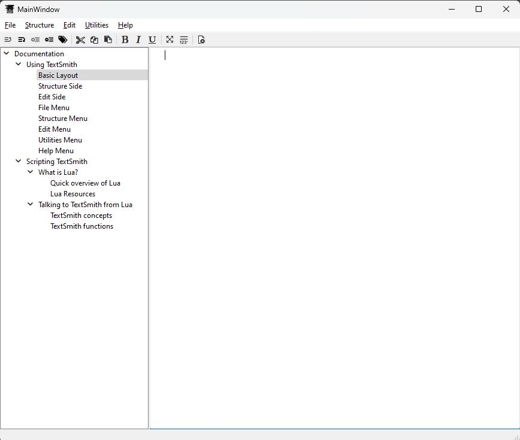
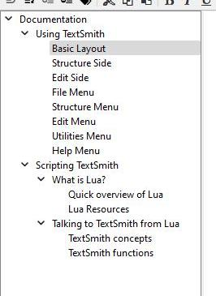
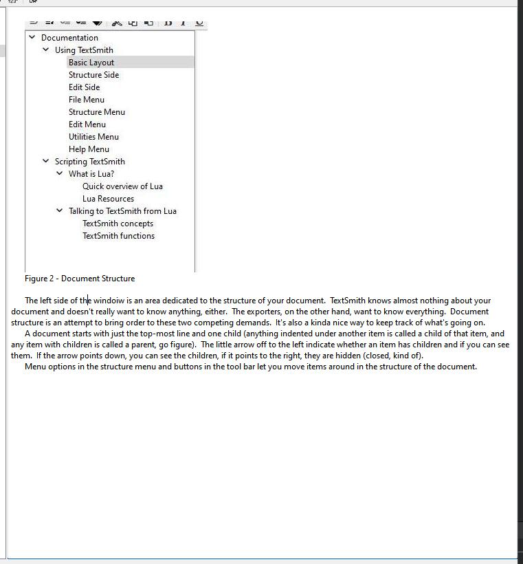

Using TextSmith

Figure 1 - The basic layout
The basic layout of the application is pretty simple. At the top is the menu bar, below that is the tool bar. In the center is tha actual workspace broken up into the novel structure and the text editor. Finally at the bottom is the message bar, where various messages are displayed as the program takes actions that are not obvious to the user (such as auto saving, or successful EPUB creation).
As you can see in the image above, I wrote this documentaion in TextSmith. It's called, in programmer terms, 'eating your own dogfood'. This in reference to an old saying that if you have to eat the dog food, you are going to try and make it some pretty nice dogfood. I wrote in this program mostl;y because I intend to write my novels in it, and it has helped me find bugs (damn you pasted images!).

Figure 2 - Document Structure
The left side of the windoiw is an area dedicated to the structure of your document. TextSmith knows almost nothing about your document and doesn't really want to know anything, either. The exporters, on the other hand, want to know everything. Document structure is an attempt to bring order to these two competing demands. It's also a kinda nice way to keep track of what's going on.
A document starts with just the top-most line and one child (anything indented under another item is called a child of that item, and any item with children is called a parent, go figure). The little arrow off to the left indicate whether an item has children and if you can see them. If the arrow points down, you can see the children, if it points to the right, they are hidden (closed, kind of).
Menu options in the structure menu and buttons in the tool bar let you move items around in the structure of the document.

Figure 3 - The Edit side
The edut side of the program is whhere the magic happens! Where your thoughts hit the electrons! All of your expected editting things just work over here the weay youkind of expec them to. Cutting, copying, pasting
Scripting TextSmith
(This overview is cribbed almost verbatum from 'https://www.tutorialspoint.com/lua/lua_quick_guide.htm')
Lua is an extensible, lightweight programming language written in C. It started as an in-house project in 1993 by Roberto Ierusalimschy, Luiz Henrique de Figueiredo, and Waldemar Celes.
It was designed from the beginning to be a software that can be integrated with the code written in C and other conventional languages. This integration brings many benefits. It does not try to do what C can already do but aims at offering what C is not good at: a good distance from the hardware, dynamic structures, no redundancies, ease of testing and debugging. For this, Lua has a safe environment, automatic memory management, and good facilities for handling strings and other kinds of data with dynamic size.
Features
Lua provides a set of unique features that makes it distinct from other languages. These include −
Extensible
Simple
Efficient
Portable
Free and open
Example Code
print("Hello World!")
How Lua is Implemented?
Lua consists of two parts - the Lua interpreter part and the functioning software system. The functioning software system is an actual computer application that can interpret programs written in the Lua programming language. The Lua interpreter is written in ANSI C, hence it is highly portable and can run on a vast spectrum of devices from high-end network servers to small devices.
Both Lua's language and its interpreter are mature, small, and fast. It has evolved from other programming languages and top software standards. Being small in size makes it possible for it to run on small devices with low memory.
Learning Lua
The most important point while learning Lua is to focus on the concepts without getting lost in its technical details.
The purpose of learning a programming language is to become a better programmer; that is, to become more effective in designing and implementing new systems and at maintaining old ones.
Some Uses of Lua
Game Programming
Scripting in Standalone Applications
Scripting in Web
Extensions and add-ons for databases like MySQL Proxy and MySQL WorkBench
Security systems like Intrusion Detection System.
Here is a list of a lot of web sites dedicated to lua programming:
https://www.tutorialspoint.com/lua/index.htm
https://www.lua.org/pil/1.html
http://lua-users.org/wiki/LuaTutorial
https://hackr.io/tutotials/learn-lua
https://tylerneylon.com/a/learn-lua/